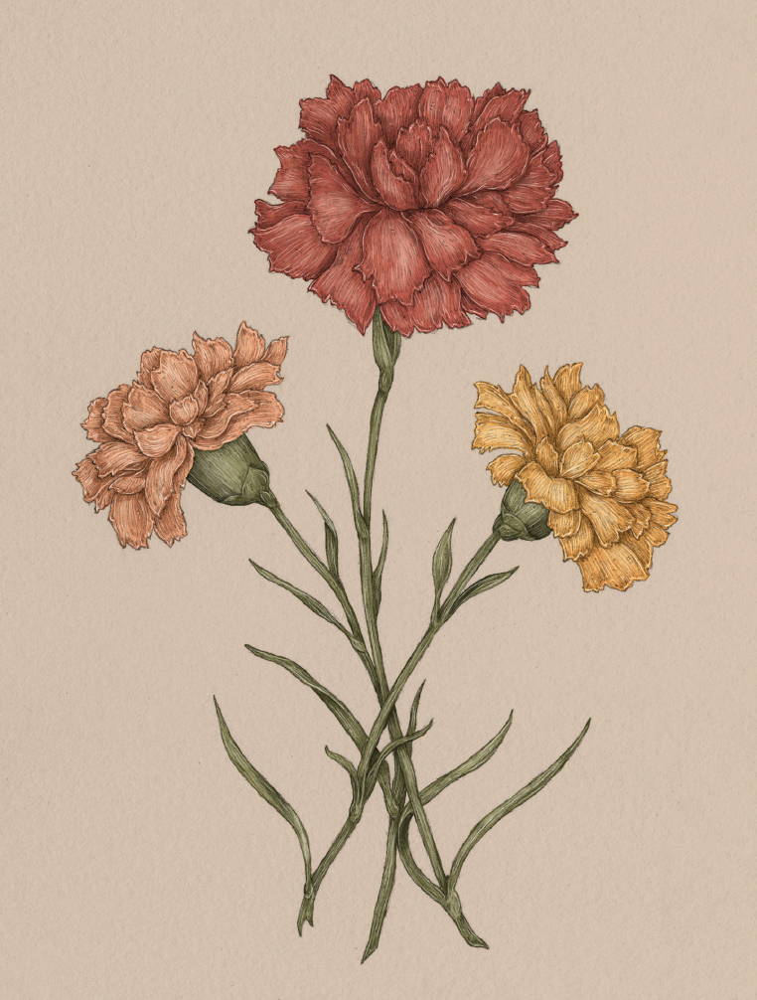

Plate I-A
The Language of Flowers
Carnation Study

Carnation
Dianthus caryophyllus
Definition: A classic symbolic flower associated with devotion, remembrance, and emotional depth, with color-specific meanings in floriography.
Meaning
- Mother's eternal love
- Heartache
Origin
The meaning behind carnations can be traced back to the Crucifixion of Christ; carnations are said
to have appeared where the Virgin Mary's tears fell, leading to their association with heartache
and a mother's eternal love for her son. Additionally, the common name "carnation" may refer to
Christ as the incarnation of God as man.
Pair With
- Mint or Snowdrop to console the loss of a child
- Heather for a child going off to college